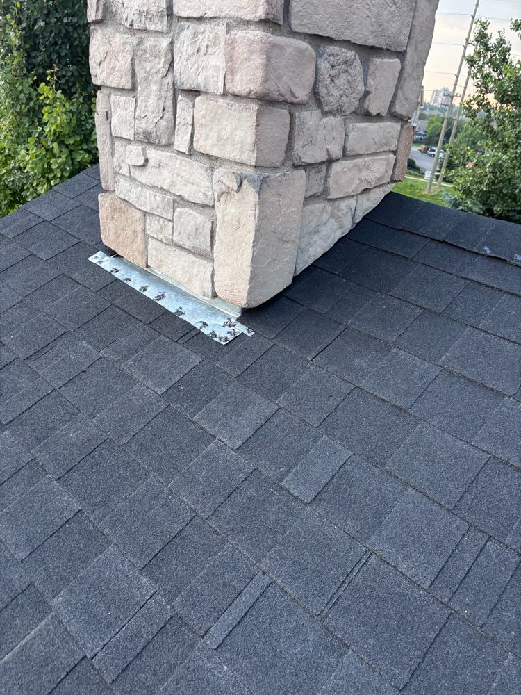

What a Roof Inspection Actually Checks

"Roof inspection" sounds vague, and frankly some companies keep it that way. Here's exactly what a thorough inspection covers — if someone's on your roof for ten minutes and calls it done, you didn't get one.
1. Shingle condition, slope by slope
Every slope gets looked at individually, because they age differently. South and west faces take the worst of the sun and wind. The inspector should check for missing, cracked, or curling shingles, granule loss, nail pops pushing tabs up, and any patch jobs from previous repairs. A few damaged shingles is normal wear; widespread issues across a slope tell a different story.
2. Flashing
Flashing — the metal strips sealing the joints around chimneys, vents, skylights, and where the roof meets walls — is where most leaks actually start, not in the middle of a shingle field. It should still be sealed tight: not corroded, not pulling away, with caulking that hasn't dried out and cracked. Chimney flashing is the number one leak source found on inspections.
3. Valleys and penetrations
Valleys (where two slopes meet) handle the most water on your roof, so they wear fastest. Every vent pipe, exhaust fan, and skylight is a hole someone cut in your roof — each one gets checked for cracked rubber boots, loose storm collars, and failed sealant. A $20 pipe boot is a $2,000 ceiling repair if it fails unnoticed.
4. Gutters and drainage
Gutters get checked for blockages, proper slope, secure hangers, and downspouts that actually move water away from the foundation. It's also worth checking what's in them — heavy shingle granules in the gutter are an early warning that the roof surface is wearing thin.
5. The attic
This is the part most inspections skip, and it's arguably the most important. From inside the attic you can see active leaks (stained decking, damp insulation), daylight coming through gaps, whether ventilation is actually working, and if insulation is deep and even. Half of roofing problems are really attic problems wearing a roof disguise.
6. Structure and edges
Sagging between rafters, soft spots in the decking, damaged fascia, drip edge condition — the unglamorous stuff that keeps everything else working.
What you should get afterwards
A real inspection ends with a written report: what was found, photos of anything concerning, and a prioritized list — what needs attention now, what to watch, and what's fine. If all you got was "looks pretty good," you paid for an opinion, not an inspection.